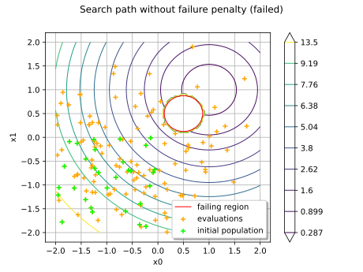

ExceptionPenalizedProblem¶
- class ExceptionPenalizedProblem(*args)¶
Optimization problem with failure penalty.
Warning
This class is experimental and likely to be modified in future releases. To use it, import the
openturns.experimentalsubmodule.Wraps an
OptimizationProblemand replaces its objective by a penalized function usingExceptionPenalizedEvaluation, so optimization algorithms can proceed when the objective throws. The penalized values account for the minimization/maximization flags: a failed evaluation returns a large positive value for minimization and a large negative value for maximization, per output for multi-objective problems. Equality and inequality constraints are penalized as well: a failed constraint evaluation is reported as infeasible (+penalizedValue for equality constraints, -penalizedValue for inequality constraints). The penalized objective and constraints use finite-difference gradient/hessian evaluated on the penalized evaluation, which never throws. Analytic derivatives of the wrapped functions are not propagated.Note
The penalized functions are flat (constant) where the wrapped evaluation fails, so finite-difference gradients vanish there. Gradient-based solvers (TNC, SLSQP, LBFGS, …) may mistake this null gradient for stationarity and converge silently to the penalized value. Use derivative-free solvers (Cobyla, Pagmo, Dlib, …) and check that the optimal value differs from the penalized value.
- Parameters:
- problem
OptimizationProblem Wrapped optimization problem
- penalizedValuefloat, optional
Penalized magnitude, finite and strictly positive. It is used for all outputs, with the sign deduced from the minimization flags. Default is
sqrt(SpecFunc.MaxScalar)so the value stays finite if it is squared by the solver.
- problem
Methods
Accessor to bounds.
Accessor to the object's name.
Accessor to input dimension.
Accessor to equality constraints.
Accessor to inequality constraints.
Accessor to level function.
Accessor to level value.
Accessor to the linear constraint bounds.
Accessor to the linear constraint term.
Accessor to the linear cost.
getName()Accessor to the object's name.
Accessor to objective function.
Accessor to the penalized magnitude.
Accessor to the wrapped problem.
Accessor to level function.
Accessor to the variables type.
Test whether bounds had been specified.
Test whether equality constraints had been specified.
Test whether inequality constraints had been specified.
Test whether level function had been specified.
Test whether objective function is a scalar or vector function.
hasName()Test if the object is named.
Test whether a least-square problem is defined.
Check if the problem is continuous.
isLinear()Check if the problem is linear.
isMinimization([marginalIndex])Test whether this is a minimization or maximization problem.
setBounds(bounds)Accessor to bounds.
setEqualityConstraint(equalityConstraint)Accessor to equality constraints.
setInequalityConstraint(inequalityConstraint)Accessor to inequality constraints.
setLevelFunction(levelFunction)Accessor to level function.
setLevelValue(levelValue)Accessor to level value.
setMinimization(minimization[, marginalIndex])Tell whether this is a minimization or maximization problem.
setName(name)Accessor to the object's name.
setObjective(objective)Accessor to objective function.
setPenalizedValue(penalizedValue)Accessor to the penalized magnitude.
setProblem(problem)Accessor to the wrapped problem.
setResidualFunction(residualFunction)Accessor to level function.
setVariablesType(variableType)Accessor to the variables type.
Examples
>>> import openturns as ot >>> import openturns.experimental as otexp >>> f = ot.PythonFunction(1, 1, lambda x: [x[0] ** 0.5] if x[0] >= 0 else (_ for _ in ()).throw(RuntimeError('negative'))) >>> problem = ot.OptimizationProblem(f) >>> penalizedProblem = otexp.ExceptionPenalizedProblem(problem, 1.0e6) >>> print(penalizedProblem.getObjective()([-1.0])) [1e+06]
- __init__(*args)¶
- getClassName()¶
Accessor to the object’s name.
- Returns:
- class_namestr
The object class name (object.__class__.__name__).
- getDimension()¶
Accessor to input dimension.
- Returns:
- dimensionint
Input dimension of objective function.
- getEqualityConstraint()¶
Accessor to equality constraints.
- Returns:
- equality
Function Describe equality constraints.
- equality
- getInequalityConstraint()¶
Accessor to inequality constraints.
- Returns:
- inequality
Function Describe inequality constraints.
- inequality
- getLevelValue()¶
Accessor to level value.
- Returns:
- valuefloat
Level value.
- getLinearConstraintBounds()¶
Accessor to the linear constraint bounds.
Only relevant for the linear problem type.
- Returns:
- LU
Interval Linear inequality constraint bounds.
- LU
- getLinearConstraintCoefficients()¶
Accessor to the linear constraint term.
Only relevant for the linear problem type.
- Returns:
- A
Matrix Linear inequality constraint term.
- A
- getLinearCost()¶
Accessor to the linear cost.
Only relevant for the linear problem type.
- Returns:
- cost
Point Linear cost term.
- cost
- getName()¶
Accessor to the object’s name.
- Returns:
- namestr
The name of the object.
- getPenalizedValue()¶
Accessor to the penalized magnitude.
- Returns:
- penalizedValuefloat
Penalized magnitude (signs are deduced from minimization flags).
- getProblem()¶
Accessor to the wrapped problem.
- Returns:
- problem
OptimizationProblem The wrapped (unpenalized) problem.
- problem
- getVariablesType()¶
Accessor to the variables type.
- Returns:
- variablesType
Indices Types of the variables.
- variablesType
Notes
Possible values for each variable are ot.OptimizationProblemImplementation.CONTINUOUS, ot.OptimizationProblemImplementation.INTEGER and ot.OptimizationProblemImplementation.`BINARY`.
- hasBounds()¶
Test whether bounds had been specified.
- Returns:
- valuebool
True if bounds had been set for this problem, False otherwise.
- hasEqualityConstraint()¶
Test whether equality constraints had been specified.
- Returns:
- valuebool
True if equality constraints had been set for this problem, False otherwise.
- hasInequalityConstraint()¶
Test whether inequality constraints had been specified.
- Returns:
- valuebool
True if inequality constraints had been set for this problem, False otherwise.
- hasLevelFunction()¶
Test whether level function had been specified.
- Returns:
- valuebool
True if level function had been set for this problem, False otherwise.
- hasMultipleObjective()¶
Test whether objective function is a scalar or vector function.
- Returns:
- valuebool
False if objective function is scalar, True otherwise.
- hasName()¶
Test if the object is named.
- Returns:
- hasNamebool
True if the name is not empty.
- hasResidualFunction()¶
Test whether a least-square problem is defined.
- Returns:
- valuebool
True if this is a least-squares problem, False otherwise.
- isContinuous()¶
Check if the problem is continuous.
- Returns:
- isContinuousbool
Returns True if all variables are continuous.
- isLinear()¶
Check if the problem is linear.
- Returns:
- isLinearbool
Returns True if the problem is of linear type.
- isMinimization(marginalIndex=0)¶
Test whether this is a minimization or maximization problem.
- Parameters:
- marginal_indexint, default=0
Index of the output marginal (for multi-objective only)
- Returns:
- valuebool
True if this is a minimization problem (default), False otherwise.
- setEqualityConstraint(equalityConstraint)¶
Accessor to equality constraints.
- Parameters:
- equalityConstraint
Function Equality constraints.
- equalityConstraint
- setInequalityConstraint(inequalityConstraint)¶
Accessor to inequality constraints.
- Parameters:
- inequalityConstraint
Function Inequality constraints.
- inequalityConstraint
- setLevelFunction(levelFunction)¶
Accessor to level function.
- Parameters:
- levelFunction
Function Level function.
- levelFunction
- setLevelValue(levelValue)¶
Accessor to level value.
- Parameters:
- levelValuefloat
Level value.
- setMinimization(minimization, marginalIndex=0)¶
Tell whether this is a minimization or maximization problem.
- Parameters:
- minimizationbool
True if this is a minimization problem, False otherwise.
- marginal_indexint, default=0
Index of the output marginal (for multi-objective only)
- setName(name)¶
Accessor to the object’s name.
- Parameters:
- namestr
The name of the object.
- setObjective(objective)¶
Accessor to objective function.
- Parameters:
- objectiveFunction
Function Objective function.
- objectiveFunction
Notes
Constraints and bounds are cleared if the objective has a different input dimension in order to keep the problem valid at all time.
- setPenalizedValue(penalizedValue)¶
Accessor to the penalized magnitude.
- Parameters:
- penalizedValuefloat
Penalized magnitude (signs are deduced from minimization flags). Must be finite and strictly positive.
- setProblem(problem)¶
Accessor to the wrapped problem.
- Parameters:
- problem
OptimizationProblem The wrapped (unpenalized) problem.
- problem
- setResidualFunction(residualFunction)¶
Accessor to level function.
- Parameters:
- levelFunction
Function Level function.
- levelFunction
- setVariablesType(variableType)¶
Accessor to the variables type.
- Parameters:
- variablesType
Indices Types of the variables.
- variablesType
Notes
Possible values for each variable are ot.OptimizationProblemImplementation.CONTINUOUS, ot.OptimizationProblemImplementation.INTEGER and ot.OptimizationProblemImplementation.BINARY.
Examples using the class¶

Optimize a failure-prone model with a failure penalty